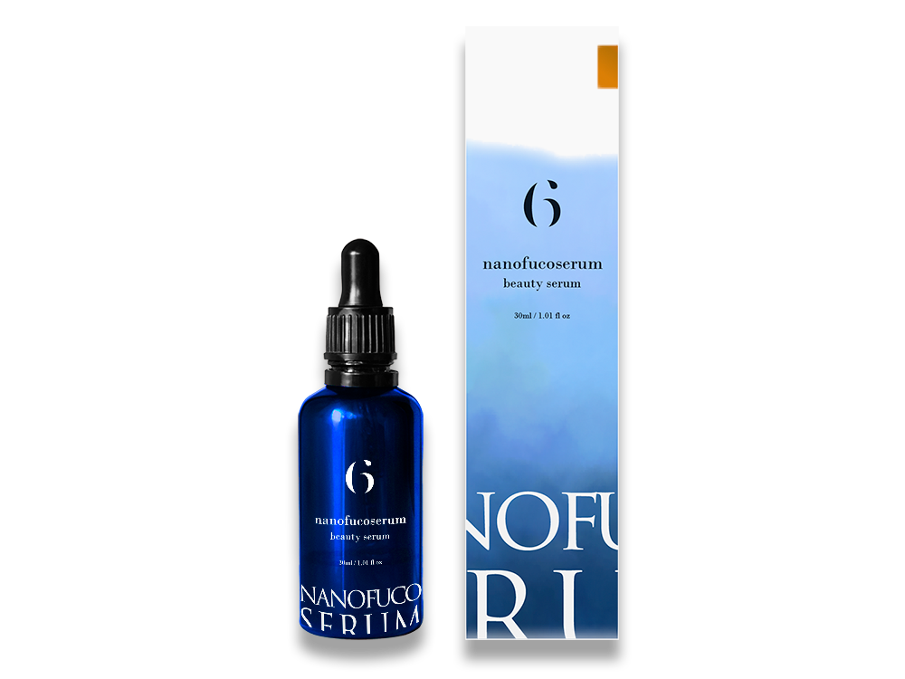

新商品の美容液
ラベル/パッケージデザイン
パッケージデザイン（コンペ作品）

- 概要
-
新しくECサイトで販売される美容液のロゴ、ラベル、パッケージのデザインコンペに出す為、作成しました。
【依頼詳細】
- 化粧品・美容液
- ベースカラーは『深い青』
- オレンジ色の成分が入っている
- 高級感のある デザインで今後も展開予定
- ターゲット層
- 美容に関心が高く、日頃よりエステに通う20-50代の女性
- 目的・ゴール
- 新規顧客や販売店の拡大、リピート購入の促進
- コンセプト
- 海の恵で、自身の中にある美（幸福・禄roku）を引き出す
- 制作ポイント
-
- 海藻や微細藻類由来の成分が配合されている事から『海』と、ブランド名『roku』から幸福を意味する『禄（ろく）』をイメージし、上記のコンセプトでデザインさせていただきました。
- パッケージには、メインカラーの青を使用した水彩風イラストを用いて海を表現しています。オレンジの色の成分が入っているので、アクセントで一部オレンジを入れています。
- 自分の中にある美しさを海の底から引き出している様子をイメージし、白い文字を配置しました。
- 販売予定のサロンのシンプルながらも洗練された高級感がある印象になるようにデザインしました。
- 美容液以外の商品に展開、また別のシリーズの美容液に展開のケースを考え、様々なサイズへ展開できる余白広めのデザインにさせていただきました
- 制作期間
- 2日間
- 使用ツール
- illustrator/AdobeFresco